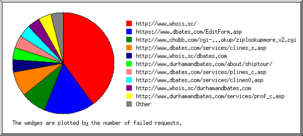
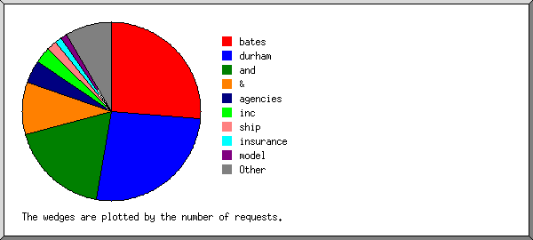
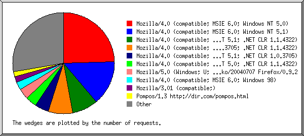
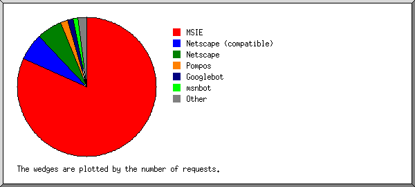
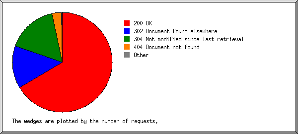
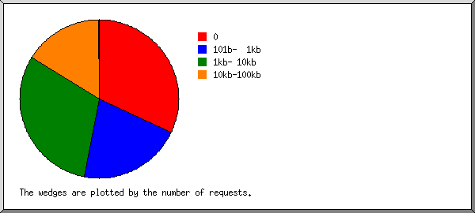
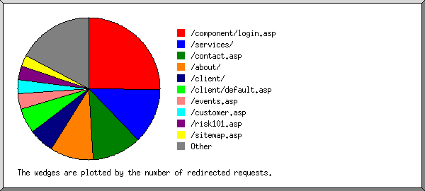
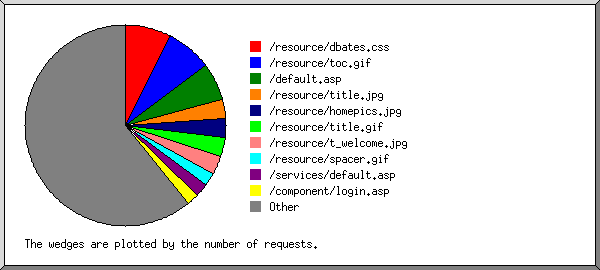

Web Server Statistics for es57045 Web Server Statistics for es57045
Web Server Statistics for es57045 Web Server Statistics for es57045(Go To: Top: General Summary: Monthly Report: Daily Summary: Hourly Summary: Failed Referrer Report: Search Word Report: Browser Report: Browser Summary: Operating System Report: Status Code Report: File Size Report: Redirection Report: Request Report)
This report contains overall statistics.
(Figures in parentheses refer to the 7-day period ending Aug 31
2004 at 11:59 PM).
Successful requests: 7,577 (1,746)
Average successful requests per day: 247 (249)
Logfile lines without status code: 93 (0)
Failed requests: 287 (80)
Redirected requests: 1,269 (301)
Distinct files requested: 180 (135)
Distinct hosts served: 430 (117)
Corrupt logfile lines: 1
Unwanted logfile entries: 62
Data transferred: 48.672 Mbytes (10.972 Mbytes)
Average data transferred per day: 1.588 Mbytes (1.567 Mbytes)
(Go To: Top: General Summary: Monthly Report: Daily Summary: Hourly Summary: Failed Referrer Report: Search Word Report: Browser Report: Browser Summary: Operating System Report: Status Code Report: File Size Report: Redirection Report: Request Report)
This report lists the activity in each month.
Each unit ( ) represents 1 request
for a page.
) represents 1 request
for a page.
month: #reqs: #pages: --------: -----: ------: Aug 2004: 7577: 0:Busiest month: Aug 2004 (0 requests for pages).
(Go To: Top: General Summary: Monthly Report: Daily Summary: Hourly Summary: Failed Referrer Report: Search Word Report: Browser Report: Browser Summary: Operating System Report: Status Code Report: File Size Report: Redirection Report: Request Report)
This report lists the total activity for each day of the week, summed over all the weeks in the report.
Each unit () represents 1 request
for a page.
day: #reqs: #pages: ---: -----: ------: Sun: 301: 0: Mon: 1141: 0: Tue: 1206: 0: Wed: 1479: 0: Thu: 1222: 0: Fri: 1290: 0: Sat: 938: 0:
(Go To: Top: General Summary: Monthly Report: Daily Summary: Hourly Summary: Failed Referrer Report: Search Word Report: Browser Report: Browser Summary: Operating System Report: Status Code Report: File Size Report: Redirection Report: Request Report)
This report lists the total activity for each hour of the day, summed over all the days in the report.
Each unit () represents 1 request
for a page.
hour: #reqs: #pages: ----: -----: ------: 0: 393: 0: 1: 159: 0: 2: 156: 0: 3: 426: 0: 4: 188: 0: 5: 213: 0: 6: 158: 0: 7: 59: 0: 8: 28: 0: 9: 43: 0: 10: 31: 0: 11: 31: 0: 12: 50: 0: 13: 93: 0: 14: 252: 0: 15: 268: 0: 16: 679: 0: 17: 816: 0: 18: 639: 0: 19: 452: 0: 20: 502: 0: 21: 782: 0: 22: 781: 0: 23: 378: 0:
(Go To: Top: General Summary: Monthly Report: Daily Summary: Hourly Summary: Failed Referrer Report: Search Word Report: Browser Report: Browser Summary: Operating System Report: Status Code Report: File Size Report: Redirection Report: Request Report)
This report lists the referrers containing broken links to the site.

Listing referring URLs, sorted by the number of failed requests.
#reqs: URL
-----: ---
10: http://www.whois.sc/
4: https://www.dbates.com/EditForm.asp
2: http://www.chubb.com/cgi-bin/agentlookup/ziplookupmore_v2.cgi
2: http://www.dbates.com/services/clines_s.asp
1: http://www.whois.sc/dbates.com
1: http://www.durhamandbates.com/about/shiptour/
1: http://www.dbates.com/services/plines_c.asp
1: http://www.dbates.com/services/clines0.asp
1: http://www.whois.sc/durhamandbates.com
1: http://www.durhamandbates.com/services/prof_c.asp
1: http://www.dbates.com/about/shiptour/
(Go To: Top: General Summary: Monthly Report: Daily Summary: Hourly Summary: Failed Referrer Report: Search Word Report: Browser Report: Browser Summary: Operating System Report: Status Code Report: File Size Report: Redirection Report: Request Report)
This report lists which words people used in search engines to find the site.

Listing query words, sorted by the number of requests.
#reqs: search term
-----: -----------
44: bates
44: durham
30: and
16: &
7: agencies
5: inc
3: ship
2: insurance
2: model
1: life
1: oregon
1: skelly
1: rope
1: dbates.com
1: cases
1: condon
1: builders
1: human
1: barge
1: collection
1: durhamandbates.com
1: hair
1: met
(Go To: Top: General Summary: Monthly Report: Daily Summary: Hourly Summary: Failed Referrer Report: Search Word Report: Browser Report: Browser Summary: Operating System Report: Status Code Report: File Size Report: Redirection Report: Request Report)
This report lists the browsers used by visitors.

Listing the top 40 browsers by the number of requests, sorted by the number of requests.
#reqs: browser
-----: -------
1865: Mozilla/4.0 (compatible; MSIE 6.0; Windows NT 5.0)
1073: Mozilla/4.0 (compatible; MSIE 6.0; Windows NT 5.1)
629: Mozilla/4.0 (compatible; MSIE 6.0; Windows NT 5.1; .NET CLR 1.1.4322)
579: Mozilla/4.0 (compatible; MSIE 6.0; Windows NT 5.1; SV1; .NET CLR 1.0.3705; .NET CLR 1.1.4322)
333: Mozilla/4.0 (compatible; MSIE 6.0; Windows NT 5.1; .NET CLR 1.0.3705)
272: Mozilla/4.0 (compatible; MSIE 6.0; Windows NT 5.0; .NET CLR 1.1.4322)
257: Mozilla/5.0 (Windows; U; Windows NT 5.0; en-US; rv:1.7) Gecko/20040707 Firefox/0.9.2
194: Mozilla/4.0 (compatible; MSIE 6.0; Windows 98)
139: Mozilla/3.01 (compatible;)
127: Pompos/1.3 http://dir.com/pompos.html
108: Mozilla/4.0 (compatible; MSIE 6.0; Windows NT 5.1; {E1B134FD-93DB-4BD5-9E35-BD95B77C9F55})
96: Googlebot/2.1 ( http://www.google.com/bot.html)
95: Mozilla/4.0 (compatible; MSIE 6.0; Windows 98; yie6_SBCDSL; sbcydsl 3.12; YComp 5.0.0.0; .NET CLR 1.1.4322)
86: Mozilla/4.0 (compatible; MSIE 6.0; AOL 9.0; Windows 98; Win 9x 4.90; .NET CLR 1.1.4322)
83: msnbot/0.11 ( http://search.msn.com/msnbot.htm)
82: Mozilla/4.5 (compatible; HTTrack 3.0x; Windows 98)
79: Mozilla/5.0 (compatible; Yahoo! Slurp; http://help.yahoo.com/help/us/ysearch/slurp)
78: Mozilla/4.0 compatible ZyBorg/1.0 Dead Link Checker (wn.dlc@looksmart.net; http://www.WISEnutbot.com)
77: Mozilla/4.0 (compatible; MSIE 6.0; Windows NT 5.1; FunWebProducts; .NET CLR 1.1.4322; MSN 9.0;MSN 9.1; MSNbMSNI; MSNmen-us; MSNcIA)
67: Mozilla/4.0 (compatible; grub-client-2.3)
66: Mozilla/4.0 (compatible; MSIE 6.0; Windows XP)
60: Mozilla/4.0 (compatible; MSIE 6.0; Windows NT 5.0; Q312461)
58: Mozilla/4.0 (compatible; MSIE 6.0; Windows NT 5.0; T312461; Q312461)
56: Mozilla/5.0 (Macintosh; U; PPC Mac OS X; en-us) AppleWebKit/125.2 (KHTML, like Gecko) Safari/125.8
55: Mozilla/5.0 (Windows; U; Windows NT 5.0; en-US; rv:1.7) Gecko/20040626 Firefox/0.9.1
49: Mozilla/4.0 (compatible; MSIE 5.5; Windows NT 5.0; T312461)
47: Mozilla/4.0 (compatible; MSIE 6.0; Windows NT 5.1; MyIE2)
45: Mozilla/4.0 (compatible; MSIE 6.0; Windows NT 5.1; .NET CLR 1.0.3705; .NET CLR 1.1.4322)
40: Mozilla/4.0 (compatible; MSIE 6.0; Windows NT 5.1; (R1 1.5))
36: Mozilla/4.0 (compatible; MSIE 6.0; Windows NT 4.0)
33: Mozilla/4.0 (compatible; MSIE 6.0; Windows NT 5.1; Q312461)
32: Mozilla/4.0 (compatible; MSIE 6.0; Windows NT 5.1; SV1; .NET CLR 1.1.4322)
32: LinkWalker
28: Mozilla/4.0 (compatible; MSIE 6.0; Windows NT 4.0; BOTW)
28: MFC_Tear_Sample
28: Mozilla/4.0 (compatible; MSIE 6.0; Windows NT 5.0; T312461)
25: ia_archiver
25: Mozilla/4.0 (compatible; MSIE 6.0; Windows NT 5.0; FunWebProducts-MyWay)
23: Mozilla/4.0 (compatible; MSIE 6.0; Windows NT 5.2; .NET CLR 1.1.4322)
22: Mozilla/4.0 (compatible; MSIE 5.0; Mac_PowerPC)
466: [not listed: 62 browsers]
(Go To: Top: General Summary: Monthly Report: Daily Summary: Hourly Summary: Failed Referrer Report: Search Word Report: Browser Report: Browser Summary: Operating System Report: Status Code Report: File Size Report: Redirection Report: Request Report)
This report lists the vendors of visitors' browsers.

Listing the top 20 browsers by the number of requests, sorted by the number of requests.
#reqs: browser
-----: -------
6187: MSIE
6027: MSIE/6
160: MSIE/5
472: Netscape (compatible)
454: Netscape
398: Mozilla/1
127: Pompos
127: Pompos/1
96: Googlebot
96: Googlebot/2
83: msnbot
83: msnbot/0
32: LinkWalker
28: MFC_Tear_Sample
25: ia_archiver
13: Yahoo-MMCrawler
13: Yahoo-MMCrawler/3
12: Java
12: Java/1
8: SurveyBot
8: SurveyBot/2
6: NaverBot-1.0 (NHN Corp.
6: NaverBot-1.0 (NHN Corp. /
5: http:
5: http://www
4: sohu-search
3: Lynx
3: Lynx/2
3: TutorGig
3: TutorGig/1
3: Tutorial Crawler 1.4
3: Scooter
3: Scooter/3
2: Gaisbot
2: Gaisbot/3
7: [not listed: 5 browsers]
(Go To: Top: General Summary: Monthly Report: Daily Summary: Hourly Summary: Failed Referrer Report: Search Word Report: Browser Report: Browser Summary: Operating System Report: Status Code Report: File Size Report: Redirection Report: Request Report)
This report lists the operating systems used by visitors.
Listing operating systems, sorted by the number of requests for pages.
#: #reqs: #pages: OS --: -----: ------: -- 1: 127: 0: Robots 2: 109: 0: Macintosh : 109: 0: Macintosh PowerPC 3: 723: 0: OS unknown 4: 6614: 0: Windows : 6: 0: Windows 95 : 408: 0: Unknown Windows : 3149: 0: Windows XP : 1: 0: Windows 32-bit : 409: 0: Windows 98 : 86: 0: Windows ME : 2460: 0: Windows 2000 : 95: 0: Windows NT
(Go To: Top: General Summary: Monthly Report: Daily Summary: Hourly Summary: Failed Referrer Report: Search Word Report: Browser Report: Browser Summary: Operating System Report: Status Code Report: File Size Report: Redirection Report: Request Report)
This report lists the HTTP status codes of all requests.

Listing status codes, sorted numerically.
#reqs: status code
-----: -----------
6065: 200 OK
10: 206 Partial content
1269: 302 Document found elsewhere
1502: 304 Not modified since last retrieval
2: 401 Authentication required
281: 404 Document not found
4: 500 Internal server error
(Go To: Top: General Summary: Monthly Report: Daily Summary: Hourly Summary: Failed Referrer Report: Search Word Report: Browser Report: Browser Summary: Operating System Report: Status Code Report: File Size Report: Redirection Report: Request Report)
This report lists the sizes of files.

size: #reqs: %bytes:
-----------: -----: ------:
0: 2421: :
1b- 10b: 0: :
11b- 100b: 0: :
101b- 1kb: 1586: 0.88%:
1kb- 10kb: 2344: 11.26%:
10kb-100kb: 1223: 86.51%:
100kb- 1Mb: 3: 1.35%:
(Go To: Top: General Summary: Monthly Report: Daily Summary: Hourly Summary: Failed Referrer Report: Search Word Report: Browser Report: Browser Summary: Operating System Report: Status Code Report: File Size Report: Redirection Report: Request Report)
This report lists the files that caused requests to be redirected to another file. (Usually directories with the final slash missing, or CGI scripts that forced redirections.)

Listing the top 30 files by the number of redirected requests, sorted by the number of redirected requests.
#reqs: file
-----: ----
320: /component/login.asp
160: /services/
141: /contact.asp
125: /about/
73: /client/
73: /client/default.asp
45: /events.asp
41: /customer.asp
39: /risk101.asp
32: /sitemap.asp
27: /about/news.asp
27: /viewdocument.asp
13: /viewdocument.asp?ID=QEBPEDBU
12: /viewdocument.asp?ID=TBBLGBSX
25: /links.asp
22: /default.asp
15: /agent/default.asp
13: /focus/mvrreg/mvrreg0.asp
12: /focus/mvrreg/default.asp
10: /editform.asp
9: /focus/euse/default.asp
8: /focus/euse/
6: /signin.asp
5: /focus/euse/euse1.asp
5: /directry.asp
4: /privacy.asp
4: /forms.asp
3: /focus/euse/euse0.asp
3: /loadform.asp
3: /focus/euse/euse4.asp
2: /focus/mvrreg/mvrreg2.asp
2: /focus/mvrreg/
15: [not listed: 11 files]
(Go To: Top: General Summary: Monthly Report: Daily Summary: Hourly Summary: Failed Referrer Report: Search Word Report: Browser Report: Browser Summary: Operating System Report: Status Code Report: File Size Report: Redirection Report: Request Report)
This report lists the files on the site.

Listing files with at least 20 requests, sorted by the number of requests.
#reqs: %bytes: last time: file -----: ------: ------------------: ---- 565: 1.12%: Aug/31/04 9:07 PM: /resource/dbates.css 554: 7.52%: Aug/31/04 9:07 PM: /resource/toc.gif 462: 0.02%: Aug/31/04 9:07 PM: /default.asp 236: 6.49%: Aug/31/04 9:07 PM: /resource/title.jpg 229: 11.07%: Aug/31/04 9:07 PM: /resource/homepics.jpg 229: 1.44%: Aug/31/04 9:07 PM: /resource/title.gif 228: 0.66%: Aug/31/04 9:07 PM: /resource/t_welcome.jpg 163: 0.24%: Aug/31/04 2:34 PM: /resource/spacer.gif 159: : Aug/31/04 9:48 PM: /services/default.asp 148: : Aug/31/04 8:34 PM: /component/login.asp 140: : Aug/31/04 9:07 PM: /contact.asp 128: : Aug/31/04 7:32 AM: /about/default.asp 120: 15.35%: Aug/31/04 9:07 PM: /resource/contacttx.jpg 109: 11.00%: Aug/30/04 2:30 PM: /resource/about.jpg 108: 0.19%: Aug/31/04 2:34 PM: /resource/x_master.jpg 107: 0.30%: Aug/31/04 2:34 PM: /resource/t_about.jpg 106: 0.30%: Aug/31/04 12:08 AM: /resource/dialc.jpg 105: 0.25%: Aug/31/04 12:08 AM: /resource/dialp.jpg 92: 5.81%: Aug/31/04 9:07 PM: /directry.asp 90: 0.36%: Aug/31/04 9:07 PM: /resource/t_contact.jpg 84: 9.16%: Aug/30/04 5:42 PM: /resource/services.gif 82: 0.21%: Aug/31/04 12:08 AM: /resource/dialn.jpg 77: 1.67%: Aug/30/04 2:30 PM: /resource/abouttx.jpg 64: : Aug/31/04 10:55 PM: /services/clines0.asp 63: : Aug/30/04 5:46 PM: /customer.asp 59: : Aug/30/04 10:16 AM: /about/history.asp 57: 0.12%: Aug/30/04 5:46 PM: /resource/dotdoc.jpg 57: 5.36%: Aug/31/04 12:08 AM: /resource/clines.jpg 56: : Aug/30/04 9:48 PM: /services/marine0.asp 54: 0.32%: Aug/31/04 12:08 AM: /resource/t_clines.jpg 54: : Aug/31/04 12:08 AM: /sitemap.asp 53: 0.29%: Aug/30/04 5:46 PM: /resource/t_resource.jpg 51: 3.28%: Aug/29/04 4:13 AM: /resource/plines.jpg 49: : Aug/30/04 9:47 PM: /services/plines0.asp 49: : Aug/28/04 4:15 AM: /about/esop.asp 48: 0.12%: Aug/28/04 4:16 PM: /resource/t_plines.jpg 47: : Aug/31/04 12:37 AM: /events.asp 46: 0.22%: Aug/30/04 2:28 PM: /resource/reprsent.jpg 46: : Aug/30/04 9:48 PM: /services/prof0.asp 45: : Aug/31/04 10:59 PM: /services/consult0.asp 44: 0.09%: Aug/25/04 7:44 PM: /agent/document/resource/agent.css 44: 0.16%: Aug/31/04 12:08 AM: /resource/t_sitemap.jpg 44: : Aug/30/04 4:14 PM: /about/begin.asp 43: 0.08%: Aug/31/04 12:43 AM: /signin.asp 43: 2.25%: Aug/30/04 5:43 PM: /resource/marine.jpg 42: : Aug/30/04 2:29 PM: /risk101.asp 41: 0.10%: Aug/30/04 5:43 PM: /resource/t_marine.jpg 41: 0.21%: Aug/31/04 12:37 AM: /resource/t_events.jpg 40: : Aug/31/04 12:08 AM: /services/clines_s.asp 39: : Aug/31/04 2:34 PM: /about/ships.asp 39: : Aug/30/04 2:30 PM: /about/industry.asp 38: 0.11%: Aug/27/04 7:57 PM: /client/document/resource/client.css 38: 0.09%: Aug/30/04 2:28 PM: /resource/b_clines.jpg 38: 0.13%: Aug/30/04 2:29 PM: /resource/t_risk101.gif 37: 0.19%: Aug/31/04 12:08 AM: /resource/special.jpg 37: : Aug/30/04 2:29 PM: /services/clines_r.asp 36: : Aug/30/04 3:18 PM: /services/plines_c.asp 36: : Aug/29/04 6:54 AM: /about/expand.asp 35: 0.15%: Aug/31/04 12:43 AM: /resource/logon.gif 35: 0.17%: Aug/30/04 5:43 PM: /resource/involved.jpg 35: 0.15%: Aug/28/04 4:16 PM: /resource/coverage.jpg 34: 0.13%: Aug/31/04 12:43 AM: /resource/linetab.gif 34: : Aug/29/04 6:55 AM: /about/partner.asp 34: 0.04%: Aug/31/04 9:38 PM: /privacy.asp 32: : Aug/30/04 3:40 PM: /services/plines_r.asp 32: : Aug/29/04 11:39 PM: /services/marine_c.asp 32: : Aug/30/04 10:42 AM: /about/commune.asp 32: : Aug/30/04 5:43 PM: /services/marine_x.asp 31: : Aug/30/04 8:57 AM: /about/sponsor.asp 31: 0.04%: Aug/27/04 7:43 PM: /client/document/resource/dotdoc.gif 31: : Aug/30/04 2:48 PM: /services/clines_i.asp 29: 0.07%: Aug/28/04 4:16 PM: /resource/b_plines.jpg 29: : Aug/30/04 5:43 PM: /services/marine_i.asp 28: : Aug/30/04 2:30 PM: /links.asp 28: 0.02%: Aug/27/04 7:57 PM: /client/resource/divider.gif 27: 1.64%: Aug/28/04 3:57 AM: /resource/prof.jpg 27: 0.04%: Aug/27/04 7:57 PM: /client/resource/serviceteam.gif 27: 0.05%: Aug/27/04 7:57 PM: /client/resource/dbhome.gif 27: 0.03%: Aug/27/04 7:57 PM: /client/resource/forms.gif 27: 0.06%: Aug/30/04 5:43 PM: /resource/b_marine.jpg 27: 0.07%: Aug/27/04 7:57 PM: /client/resource/title.gif 26: 3.74%: Aug/28/04 4:16 PM: /resource/consult.jpg 26: 0.08%: Aug/28/04 3:57 AM: /resource/t_prof.jpg 25: 0.24%: Aug/28/04 4:15 AM: /resource/esop.jpg 25: : Aug/28/04 4:16 PM: /services/marine_s.asp 24: 0.09%: Aug/28/04 4:16 PM: /resource/t_consult.jpg 24: 0.06%: Aug/30/04 2:30 PM: /resource/t_links.jpg 24: : Aug/28/04 3:57 AM: /services/prof_c.asp 24: 0.13%: Aug/28/04 4:14 AM: /resource/history.jpg 24: 0.06%: Aug/28/04 4:14 AM: /resource/b_db.jpg 24: 0.16%: Aug/31/04 2:34 PM: /resource/modelship.jpg 23: : Aug/28/04 4:16 AM: /about/news.asp 21: : Aug/30/04 3:09 PM: /services/prof_s.asp 21: : Aug/28/04 3:57 AM: /services/prof_r.asp 20: : Aug/30/04 3:12 AM: /viewdocument.asp 11: : Aug/29/04 9:07 PM: /viewdocument.asp?ID=QEBPEDBU 20: 0.47%: Aug/25/04 7:44 PM: /agent/cpmain.asp 20: 0.15%: Aug/30/04 9:17 PM: /resource/partner.jpg 563: 5.89%: Aug/31/04 10:00 AM: [not listed: 66 files]
(Go To: Top: General Summary: Monthly Report: Daily Summary: Hourly Summary: Failed Referrer Report: Search Word Report: Browser Report: Browser Summary: Operating System Report: Status Code Report: File Size Report: Redirection Report: Request Report)